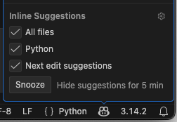
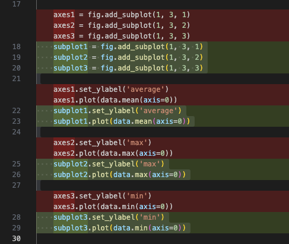

How to use Copilot to Improve an Existing Codebase
Last updated on 2026-02-03 | Edit this page
Overview
Questions
- How can Copilot help me improve my code?
- What can I do to improve my Copilot prompts?
- How can I reuse previous Copilot prompts?
Objectives
- Describe how to use prompt engineering to obtain valuable responses from Copilot
- Use Copilot to improve a segment of code
- Use Copilot to diagnose a failing unit test and fix it
- Use Copilot to add a new, small feature to an existing codebase
- Describe how to use Copilot to assist with Git commits and managing Git history
- Create and use a reusable prompt context
- Create an VSCode Agent Skill to define a specialised and reusable domain-specific task
- Describe key limitations and known issues of using LLM coding assistants within an IDE
In the previous episode we looked at Copilot giving us guidance and advice to improve our code. In this episode, we’ll look at how Copilot can assist with code modifications more directly, looking at the following features:
-
Inline suggestions- where Copilot provides coding suggestions as you type -
Edit mode- where Copilot provides broad suggestions (likeAskmode) but will also enact them step-by-step directly on our approval -
Agent mode- where Copilot directly autonomously undertakes large scale changes, with a single option to approve the changes at the end of the process
These are in ascending order of the autonomy, authority and scope that we delegate to Copilot to make changes. As we’ll see, as we delegate more authority and scope, the more we should increase our skepticism and diligence in reviewing and understanding suggestions made by such tools.
Inline Suggestions
Within VSCode, Copilot can provide “inline” suggestions as we type, which go much further than typical IDE autocomplete suggestions.
If we select the Copilot icon again in the status bar, we can see the current inline settings:

So here, we can see that inline settings will apply to all Python
files. These suggestions will appear as “ghosted text” suggestion which
you can autocomplete with tab, very similar to how they appear with
standard VSCode autocomplete. There are also
Next edit suggestions which go beyond the immediate context
to make suggestions in other places in your code. These predict the
location and the content of the next edit you’ll want to make.
Let’s say we want to add a new section describing our coding style.
Directly under Code Patterns & Conventions, add:
You should see a suggestion appear direcly after your cursor,
something like Use PEP 8 style guidelines for Python code
or similar. You can accept this suggestion by pressing Tab.
If you continue to add new lines after this, you may find it continues
to suggest other things to include, so we end up with, for example:
MARKDOWN
### Coding Style
- Use PEP 8 style guidelines for Python code
- Use descriptive variable names (e.g., `inflammation_data`, `mean_inflammation`)
- Comment code sections for clarity, especially data processing stepsIt does this by rapidly incorporating contextual information from a number of sources to infer a suggestion, including:
- The code file you are editing
- Any code you have currently selected
- Frameworks, languages and dependencies
- Any instructions file
Copilot suggestions are a starting point, but we should alwyays review, understand, and amend as necessary, as opposed to blindly accepting suggestions.
Amend the Suggestions
3 mins.
Read through and understand the Copilot suggestions for the Coding
Style section of the copilot-instructions.md file, and
add/amend as you see fit, perhaps to fit your coding style.
For example:
MARKDOWN
### Coding Style
- Follow PEP 8 style guidelines for Python code
- Use descriptive variable names (e.g., `inflammation_data`, `mean_inflammation`)
- Comment code sections for clarity, especially to explain purpose and logic, and to describe data processing stepsAs we’ll see shortly, these coding style guidelines will inform future refactoring of our code.
Inline Suggestions for Code
3 mins.
In inflammation-plot.py, begin adding an additional
parameter to the functions calls in the code, by placing an additional
, at the end of the given list of parameters, and see which
inline suggestions are being made, e.g.:
Try this for the following function calls: - np.loadtxt
- plt.figure - Each of the .plot calls to the
axes variables
- What’s being suggested?
- Are the suggestions helpful? Are they always the same?
- Does the code still run?
- For example:
For .plot, if the first suggestion of a
color parameter is selected, it suggests variants of that
for the other calls to plot, e.g.
Edit Mode
Edit mode differs from inline suggestions by offering the ability to enact changes step-by-step directly on your approval. Unlike inline suggestions which appear as you type, Edit mode allows you to request broader changes across multiple lines or functions, so it’s ideal for repetive things like small-scale refactoring of code logic or renaming variables. It represents a middle ground in terms of autonomy — more direct than inline suggestions but less autonomous than Agent mode.
To get started with using edit mode in VSCode, you highlight the code you want to modify before requesting the change you want.
For example:
- Select
Editas the Copilot mode in the chat window - Select the entire for loop in
inflammation-plot.py; you’ll notice that the context now includes this file with the selected line numbers - Enter
Add a comment about this code above this line - Press
Enter
You’ll now see a comment added above the loop highlighted in green,
with a Keep or Undo pop-up displayed at the
bottom. Read through the comment, and if you agree that the comment
summarises the code sufficiently, select Keep.
The Temptation to Blindly Accept!
So note that here, we properly scrutinise the suggestion as opposed to accepting it blindly! it would be all too easy to just assume it’s correct and just accept it, but it’s helpful to remember that tools like Copilot are like a more helpful autocomplete, not a thinking teammate. As such, skepticism and review must become a key practice when using such tools.
Refactor!
3 mins.
Let’s assume we want to rename the axes variables to
have the prefix subplot instead, e.g. instead of
axes1, we’d have subplot1.
Use Copilot edit mode to rename all of these variables, then verify and accept the changes if you agree with them. Does the code still run correctly?
-
Select the code from the first
axes1definition to the last use ofsubplot3, e.g. Ensure
Editmode is selected in chat, and enterRename axes variables to have a subplot prefix insteadPress
Enterand you should see something like the following:
After reviewing the suggestions, select
Keep
The code still runs correctly.
Agent Mode
Agent mode differs from edit mode by being outcome driven rather than per-edit driven. So instead of asking Copilot to change a specific piece of code, you give it a goal, such as adding a feature, or refactoring a module. Copilot then plans how to achieve that goal and works across the repository to do so. It may read and modify multiple files, add or update tests, adjust configuration, and iterate over several steps before presenting the result. In this way, agent mode behaves more like a junior developer taking on a task, rather than a pair programmer responding line-by-line. Note the increase in authority to modify code, which represents a much greater risk: the impact of changes is greater and requires more careful (and potentially more involved) review.
- FIXME